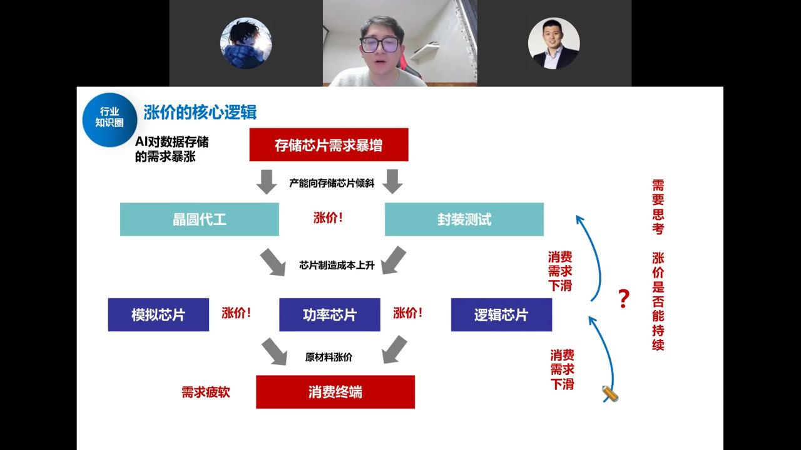
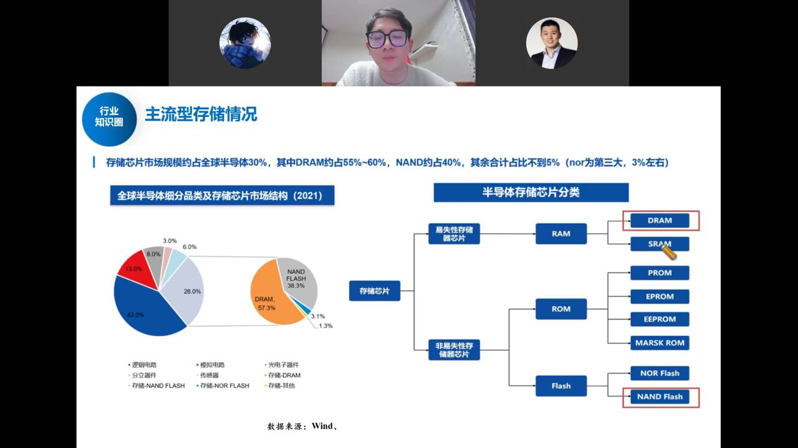
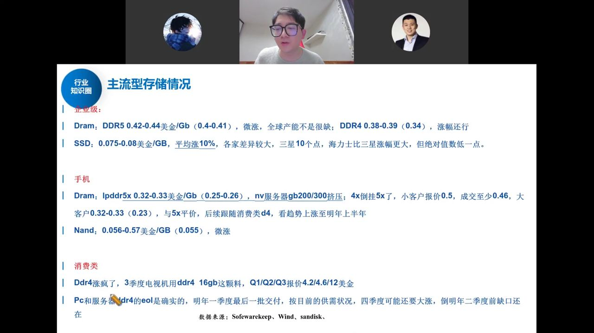

本轮半导体涨价由存储芯片需求暴增引发，沿"产能倾斜→晶圆代工/封测涨价→设计公司涨价"层层传导。 本期讲清涨价的底层逻辑、如何辨别真正能把利润留在体内的环节（寡头供应+低端品类）， 以及存储、利基存储、晶圆厂、封测、功率、模拟、CPU 等各环节的涨价现状与持续性。
这轮涨价的起点是AI 对数据存储的需求暴增，存储芯片供不应求。整个传导链条如下：

关键提醒：不能看到公司发涨价函就以为股价要涨。如果只是被动把上游成本涨价转给下游、自己毛利率不变，那它并没有把利润留在体内，不是真正受益者。真正的好需求来自 AI（存储），消费电子/汽车等终端需求弱，涨价传导下去反而可能抑制需求、卖不动。
研究员给出三条选股标准：
最核心的一条：这轮涨价的矛盾根源是存储供需失衡，而解决矛盾的唯一办法是存储扩产——也就是长鑫长存的扩产链，以及对应的半导体设备材料。扩产是持续的、不受终端需求波动影响的，这才是"炒涨价"绕不开、最确定的方向。
存储约占全球半导体市场 30%，其中 DRAM 约占 55–60%、NAND 约占 40%，NOR Flash 是第三大（约 3%）。分两类玩家：

过去机械硬盘 HDD 库存少、供给少，AI 服务器爆发后用 SSD（NAND）平替，数据中心 SSD 需求暴涨约 35%，而产能跟不上，供给严重失衡。叠加 HBF（GPU 与 NAND 融合的新产品）等新技术，NAND 需求爆炸。云厂 CAPEX 疯狂上修（谷歌 2026 年资本开支近 1800 亿美金、翻倍以上）。

存储交易的是"价格的边界"——只要价格持续上涨，股价理论上就持续上升。利润更多留在芯片设计公司体内（不是模组厂，模组厂靠库存赚的钱会随库存消化而消失）。闪迪已跌了十几个季度、才刚反转两个季度，这轮周期持续性可能还很长。
确定性从高到低：① 存储（最核心、持续性最强）；② 解决矛盾的存储扩产链——半导体设备材料（最确定，不受终端需求波动影响）；③ 功率里的中低压 MOSFET；④ 寡头供应+低端品类、能把利润留在体内的设计公司。
（结尾小爆姐补充宏观策略：本轮核心资产上涨是"货币超发+国家复苏+短期博弈"三层逻辑，市场倾向慢牛、波动收窄；投资者要做的是"在车上"跟上核心资产，而非猜顶猜底。）